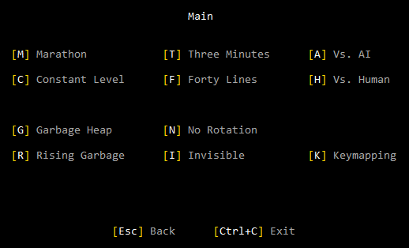
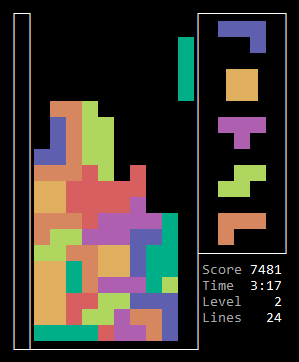
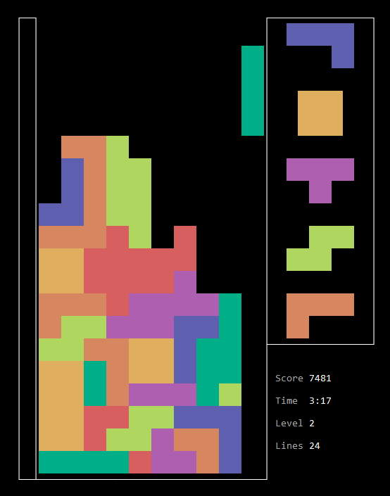
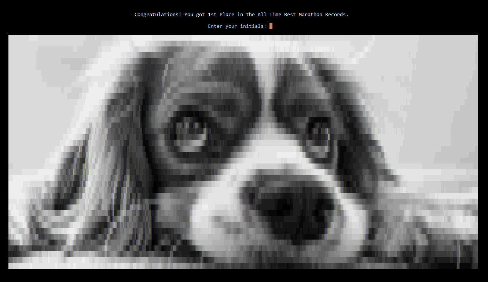

© 2023 meatfighter.com
This content is licensed under CC BY-SA 4.0


TEXTRADS
Textrads is an xterm implementation of the classic block-stacking puzzle game, where players arrange falling tetrominoes to form horizontal lines that disappear, with the goal of prolonging the pile from reaching the top. Its name is a portmanteau of “text”, the medium of terminals, and “tetrads”, another word for the plummeting pieces.
Textrads combines a modern aesthetic with old-school gameplay. It supports multiple single-player modes, a Vs. AI mode, and a two-player mode via peer-to-peer netplay. But it lacks hard drop, ghost piece, and hold piece mechanics. It plays without music or sound effects. And it relies on the operating system’s autorepeat for DAS.
[ video of gameplay ]Textrads is a Java app bundled into in a single jar. To install Textrads, download the jar, and put it into a directory of your choice.
Textrads requires Java 8+ and an xterm terminal emulator. For Unix-like operating systems, open and maximize a console, navigate to the directory containing textrads.jar, and run:
java -jar textrads.jar ⮺
For Windows, the best option is the Windows Subsystem for Linux (WSL). If WSL is unavailable, open a Command Prompt, navigate to the directory containing textrads.jar, and run:
javaw -jar textrads.jar ⮺
That command executes Textrads in a Swing-based xterm terminal emulator included in the jar.
The source is available here.
Textrads creates a subdirectory called data to store preferences and leaderboards. To uninstall Textrads, delete textrads.jar along with that subdirectory.
Press K on the main menu to adjust the keymapping. The defaults appear below.
| Action | Key |
|---|---|
| Shift Left | 🠄 |
| Shift Right | 🠆 |
| Soft Drop | 🠇 |
| Rotate Counterclockwise | Z |
| Rotate Clockwise | X |
| Pause | Enter |
| Give Up | Esc |
Xterm limitations restrict the keymapping to printable character keys, the arrow keys, the function keys, and the following keys: Backspace, Delete, End, Enter, Esc, Home, Insert, Page Down, Page Up, and Tab.
Textrads is built on top of a pure-Java library for text-based user interfaces called Lanterna that provides elements with the distinctive blue-background look-and-feel reminiscent of text mode DOS applications, such as edit, Norton Utilities, WordPerfect, QBasic, Borland’s IDEs, and many more. However, Textrads taps into a lower-level of Lanterna to deliver custom components with a visual style evoking Bulletin Board Systems of the pre-internet era. Users navigate through menus of key-bound items:

Textrads adapts the layout of its components based on the available screen space, and it uses two different scales for displaying graphics. It alters its rendering behavior at runtime by using Lanterna’s ability to detect window resizing:


Textrads outputs 256-color ANSI escape codes. Since terminal users commonly customize the original sixteen colors, particularly the background color, Textrads avoids them for a consistent chromatic experience. Unfortunately, the restricted palette constrained the animals on the congratulations screen to sixteen shades of gray:

Despite the opportunity for “true color” animals with the vast palette of 24-bit color ANSI escape codes, Textrads opted not to use them due to limited adoption of the standard.
The images on the congratulations screen and the PSA screens consist of rectangular Right Half Blocks (U+2590) rather than square Upper Half Blocks (U+2580) because tests across multiple terminal emulators revealed Right Half Blocks render consistently, whereas adjacent Upper Half Blocks and related block elements experience visual discontinuities around adjoining seams. The stretched-pixel look of the Right Half Blocks images evokes memories of era of slow internet connections, a time when browsers displayed a low-resolution version of interlaced GIFs that progressively improved with each downloading pass.
As for the game, Textrads borrows visual elements of Tetr.io, particularly the colors, the frame, the preview queue, the attack bar, and the stats. But, since its mechanics are based off DX, there is no hold space or ghost piece.
Textrads employs the standard 20 rows × 10 columns playfield. Tetrominoes spawn at (4,0), the cell with the black dot:
If a spawned tetromino overlaps a playfield block, it’s game over by block out.
If a tetromino partially locks into the vanish zone—the region above the playfield ceiling—the game truncated it. Similarly, if garbage rows lift blocks into the vanish zone, the game deletes them. However, the player can rotate the falling piece into the vanish zone, temporarily hiding part or all of it from view.
The player selects a starting level (0–29) at the beginning of all modes. Except for Constant Level mode, the level advances as the player progresses per:
$currentLevel = max(startingLevel, \big\lfloor \frac{clearedLines}{10} \big\rfloor)$
The games determines the number of frames per gravity drop on a given level via:
$framesPerDrop_0 = 52$
$framesPerDrop_{30} = 2$
$\lambda = \frac{1}{30} ln(\frac{framesPerDrop_0}{framesPerDrop_{30}})$
$framesPerDrop_{level} = framesPerDrop_0 e^{-\lambda \: level}$
The table and plots below describe the first thirty levels:
| level | frames/drop | drops/frame |
|---|---|---|
| 0 | 52.000000 | 0.019231 |
| 1 | 46.648487 | 0.021437 |
| 2 | 41.847719 | 0.023896 |
| 3 | 37.541015 | 0.026638 |
| 4 | 33.677530 | 0.029693 |
| 5 | 30.211651 | 0.033100 |
| 6 | 27.102458 | 0.036897 |
| 7 | 24.313243 | 0.041130 |
| 8 | 21.811077 | 0.045848 |
| 9 | 19.566419 | 0.051108 |
| 10 | 17.552766 | 0.056971 |
| 11 | 15.746346 | 0.063507 |
| 12 | 14.125831 | 0.070792 |
| 13 | 12.672089 | 0.078914 |
| 14 | 11.367958 | 0.087967 |
| 15 | 10.198039 | 0.098058 |
| 16 | 9.148521 | 0.109307 |
| 17 | 8.207013 | 0.121847 |
| 18 | 7.362399 | 0.135825 |
| 19 | 6.604707 | 0.151407 |
| 20 | 5.924992 | 0.168777 |
| 21 | 5.315229 | 0.188139 |
| 22 | 4.768219 | 0.209722 |
| 23 | 4.277504 | 0.233781 |
| 24 | 3.837290 | 0.260601 |
| 25 | 3.442381 | 0.290497 |
| 26 | 3.088112 | 0.323822 |
| 27 | 2.770303 | 0.360971 |
| 28 | 2.485201 | 0.402382 |
| 29 | 2.229440 | 0.448543 |
| 30 | 2.000000 | 0.500000 |
As a piece descends, the game increases or decreases the integer number of frames per gravity drop to ensure it achieves the fraction values listed above in the average.
© 2023 meatfighter.com |